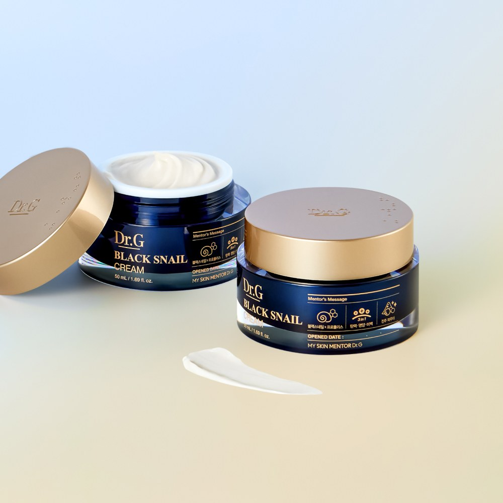
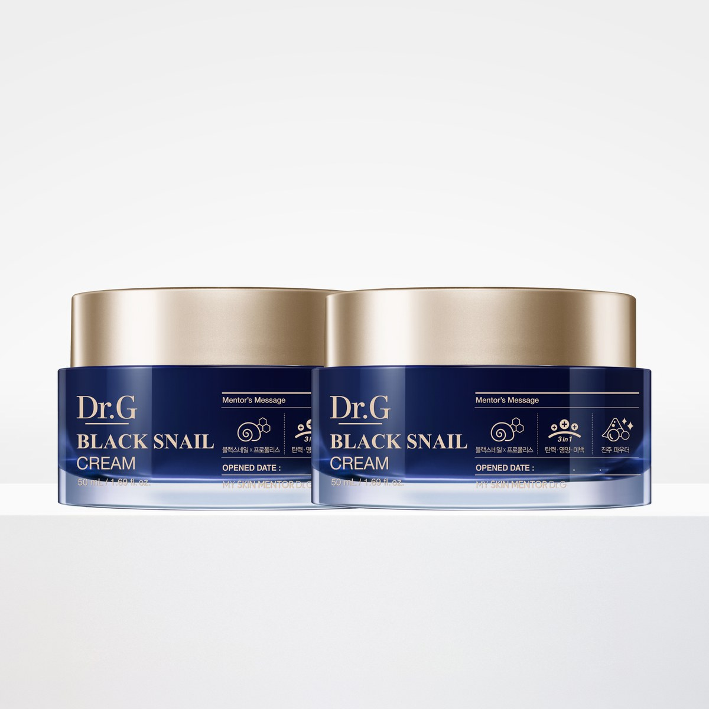
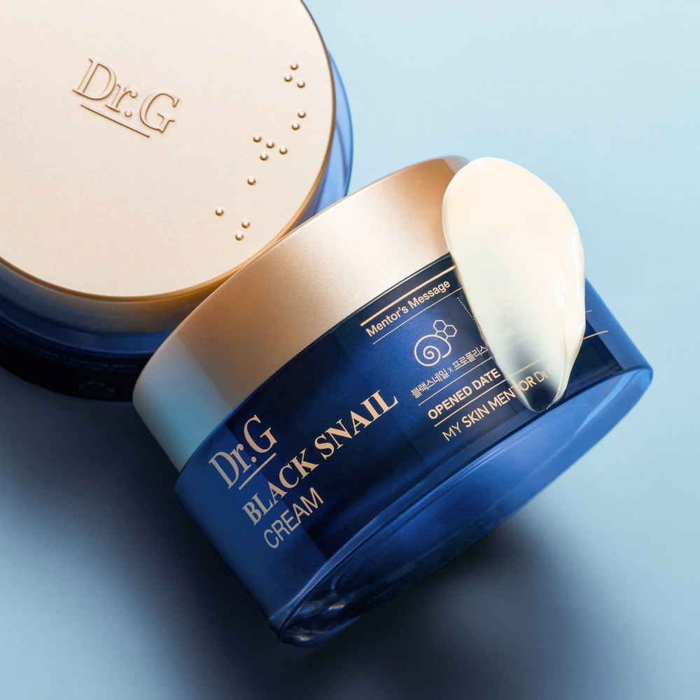

Dr.G Black Snail Cream Review at a Glance
This Dr.G Black Snail Cream review looks at a popular Korean moisturizer from Dr.G (닥터지), the derma brand that markets itself as "My Skin Mentor." The Black Snail Cream puts snail-mucin care front and center, and the listing we checked is a duo of two 50ml jars—one to open now, one to keep as a spare.
If you've been staring at a wall of snail creams and don't know where to start, here's what's on the jar, how the cream feels, and who it suits.

What's Inside: Black Snail, Propolis and Pearl Powder
Dr.G's jar label groups the story into three talking points (Korean listing / packaging):
| Focus | What the Label Highlights | Plain-English Take |
|---|---|---|
| Black Snail × Propolis | Snail mucin filtrate paired with propolis | Cushioned moisture and a richer cream feel |
| 3-in-1 Care | Elasticity, nutrition and brightening messaging | Everyday cream positioned for look of firmness and glow |
| Pearl Powder | Pearl powder callout on the Mentor's Message panel | Finishing touch in the brand's cream story |


Texture, Scent and Daily Feel
The cream is a smooth, ivory, cushiony moisturizer. It spreads easily, settles without a greasy film for most normal-to-dry skin, and feels richer than a gel-cream but lighter than a sleeping pack. That makes it a solid last step at night, and workable in the morning under sunscreen if you don't use too much.
As with many Korean creams, expect a light cosmetic scent. If you prefer fully fragrance-free routines, patch test first.
Key Details
| Item | Details |
|---|---|
| Brand | Dr.G (닥터지) · Korea |
| Product | Black Snail Cream |
| Size / set | 50ml × 2 (duo pack on the Korean listing we used) |
| Texture | Cushiony cream, ivory color |
| Hero story | Black snail mucin filtrate, propolis, pearl powder (label) |
| Routine step | Final moisturizer after toner/serum |
| US Amazon | Availability varies — we link an Amazon search |

Photo note: These are real product photos from the Korean shopping-connect listing (some labels include Korean text). We didn't add any AI-generated or mosaic images.
How It Compares
| Dr.G Black Snail Cream | Centellian24 Madeca Cream | Basic Gel Moisturizer | |
|---|---|---|---|
| Hero angle | Snail mucin + propolis cream | Centella / Madeca cica cream | Humectants only |
| Feel | Cushiony cream | Often richer cica cream | Light gel |
| Best for | Dryness, everyday moisture | Barrier-focused cica fans | Oily / humid climates |
| Set style | Often sold as a duo | Single jar or sets | Single bottle |
Pros & Cons
✅ Pros
- Trusted Korean derma brand with clear snail-cream positioning.
- Duo pack is handy for travel spare or sharing.
- Cushiony texture that works as a final step.
- Clean product photography, easy to identify on shelf.
⚠️ Cons
- Not a medical treatment; results are gradual and personal.
- May feel rich for very oily skin in summer.
- US Amazon sellers and stock change often.
- If you hate any fragrance, patch test first.
Who It Suits (and Who Should Skip It)
- Great for: Normal-to-dry skin that wants a cushioned snail-mucin cream.
- Great for: Shoppers who like Korean derma brands and a simple last step.
- Great for: Gift or duo-pack buyers who want a spare jar.
- Maybe skip: If you prefer ultra-light gels only, or a fully fragrance-free routine.
Dr.G Black Snail Cream FAQ
What is Dr.G Black Snail Cream?
It's a moisturizing cream from Korean derma brand Dr.G (닥터지), built around black snail mucin filtrate with propolis and pearl powder on the label story. The duo pack reviewed here is two 50ml jars.
Is snail mucin good for dry or dull skin?
Many people like snail-mucin creams for a cushioned, hydrated feel. Results vary by skin, and this is a cosmetic moisturizer, not a medical treatment.
Is Dr.G a Korean brand?
Yes. Dr.G is a well-known Korean derma cosmetics brand ("My Skin Mentor Dr.G"), sold widely in Korea and overseas.
How do I use it?
After toner and serum, take a pea-sized amount and press it over the face. Add a little more on dry spots. Use morning and night if your skin likes richer creams.
Can I buy it on Amazon?
US Amazon stock and sellers change. We link an Amazon search for Dr.G Black Snail Cream so you can check current listings.
Dr.G Black Snail Cream
Korean snail-mucin cream duo. Check current Amazon listings and sellers.